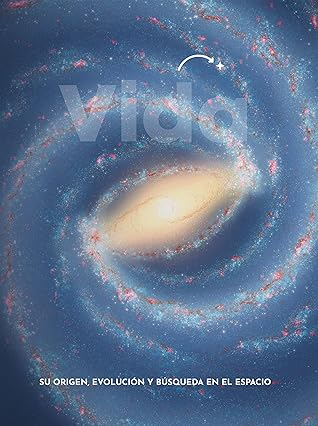

Vida: su origen, evolución y búsqueda en el espacio (Spanish Edition)
Reseña por Jorge I. Zuluaga

Ver reseña en GoodReads (necesita cuenta)
A pesar de esto, y me parece increíble cuando lo pienso otra vez, el número de libros que se han escrito sobre el tema, al menos con un rigor científico apropiado, juraría es más de 10 veces menor -por no utilizar el rimbombante pero más preciso "varios ordenes de magnitud menor"- que el número de libros escritos sobre casi cualquier otro tema en astronomía.
¿No me creen? Hagan el experimento la próxima vez que visiten una librería o una biblioteca. Pregunten por la sección de ciencias; cuenten el número de libros de astronomía y de entre ellos señalen los que tratan específicamente del tema de la vida en el universo. No dudo que comprobaran sin dificultad mi afirmación.
Es por eso que cuando un nuevo libro en el tema sale a la luz es relativamente fácil, especialmente para quiénes amamos el tema, notarlo sin demora; aún más fácil resulta saltar sobre él para devorarlo, si se puede, de una sentada.
Esto fue justamente lo que me paso con "Vida: su origen, evolución y búsqueda en el espacio". Aunque debo confesar que no lo descubrí por casualidad. Tengo el privilegio de que una de las autoras, la doctora Priscila Nowajewski, haya sido estudiante de al menos dos cursos de astrofísica que imparto en el diplomado virtual de Astronomía de la Universidad de Antioquia (este semestre esta viendo, contra mi voluntad, el tercero, justamente el curso de Astrofísica Planetaria, que no necesita ver, pero que matriculo testarudamente). La doctora Nowajewski (la llamare Priscila, contra mi voluntad también, porque la aprecio) me hizo saber que el libro había sido publicado y que naturalmente sería de mi interés. Más suerte tuve de que antes de lanzarme sobre él en voladora en Amazon, Priscila me hiciera llegar una copia.
Como dije antes, que se escriban libros sobre astrobiología (el nombre que se le da convenientemente al estudio del problema de la vida en el universo) no es muy común. Pero que además se escriban originalmente en español es más raro aún.
¿Cuál es pues la razón de ambas cosas (que no hayan muchos libros en el tema y menos en español)?.
De la primera especularía que se debe al hecho de que la astrobiología es demasiado interdisciplinaria para el gusto general. Usando un símil musical, la astrobiología es la disciplina más crossover que conozco. No creo que sea fácil para un autor o autora, meter en unos cientos de páginas temas que van desde la bioquímica hasta el origen del universo; por un lado porque es difícil para una sola especialista saber de todo eso y por el otro porque no mucha gente encontrará todos los temas apetecibles (las personas aficionadas a las ciencias son más monocromáticas de lo que pensamos).
De la segunda, que no hayan muchos textos en español, la explicación puede ser más complicada; pero definitivamente no es la manida idea de que no hay suficientes personas que puedan leer libros en nuestra lengua. Somos más de 600 millones de hispanohablantes que queremos leer en español, tanto como cualquiera, buenas libros de ciencias.
Toda esta dilatada introducción -que me hizo perder tal vez el 90% de las personas que leerán el resto de la reseña- es solo para transmitir el sentimiento de admiración y de placer que me da de que exista este libro. Pero también el de admiración por el grupo de científicos y científicas que se animaron a compilarlo.
Ahora si vamos con el libro.
"Vida" (como lo llamare en breve en lo sucesivo) es una compilación de 8 ensayos escritos por expertos y expertas de distintas disciplinas científicas que abordan, como es obvio, aspectos diferentes de la pregunta por la vida en el universo: la materia, el origen de los planetas, las características física de esos mismos planetas, las atmósferas en las que respira la vida -aquí o allá-, el origen de la vida, la evolución de la vida en la Tierra -el único ejemplo que conocemos-, la relación de la vida con el planeta que la acoge y la búsqueda de vida extraterrestre. Los 8 ensayos están bien encadenados y las diferencias de estilo y particularidades de cada autor y autora, apropiadamente suavizadas para que se pueda leer como una sola unidad.
Como adivinaran de lo escrito antes, he leído ya un par de libros en el tema como para afirmar con alguna seguridad, que el resultado es maravilloso. No esperaba menos del grupo de profesionales que se juntaron para esto, pero si debo confesar que era escéptico. Este no es un tema fácil para acomodar en casi 300 páginas.
Pero lo lograron.
Como es obvio no todo es perfecto. Como también debe resultar fácil adivinar, en los capítulos sobre los temas de los que más sé, descubrí algunas imprecisiones que estoy seguro son solo mal entendidos de lenguaje. El capítulo con más "peros" es el titulado "La vida se abre camino: origen del sistema solar y formación planetaria". Encontré algunas afirmaciones que no me parecieron correctas desde el punto de vista físico -sobre todo en el tema de formación planetaria- y me pareció que el autor a veces usa un lenguaje muy técnico para un libro de este nivel. Pero repito, ninguna de esas cosas creo que comprometa la calidad de este capítulo o del resto del libro.
También hubo unos capítulos que disfrute más que otros. El capítulo dedicado a la atmósfera de la Tierra, escrito por la Doctora Pamela Pizarro, ¡me encantó! Que buena síntesis, que forma tan agradable y clara de escribir y que interesantes sus anotaciones personales sobre la vida en la Patagonia. Provoca probar.
El último capítulo, tal vez el más esperado por las personas que leemos del tema, y que esta dedicado justamente a la búsqueda de vida en el Universo fue escrito por Priscila. No había leído nada de ella. El veredicto: ¡me encanto también! Me gusto su estilo sencillo y empático -algo que se necesita mucho en la divulgación- sin perder el rigor para transmitir ideas tan importantes. El tema de la circulación atmosférica en exoplanetas fue muy novedoso y es la primera vez que lo veo tratado a este nivel, a pesar de que las personas que trabajamos en esta área sabemos que es un tema crucial en la habitabilidad planetaria.
Me gusto mucho el estilo usado por casi todas las autoras de abrir sus ensayos con experiencias o anécdotas personales. Es una estrategia de comunicación bien conocida, pero una cosa es saber que se puede usar y otra leer historias bonitas como abrebocas a un capítulo en donde se tratan temas tan serios como la química de la vida o el interior y atmósfera de la Tierra.
Me encantaron también las ilustraciones: precisas desde el punto de vista científico sin perder ni un ápice de precisión científica pero también de atractivo gráfico.
En suma. "Vida" es un libro que vale la pena conseguir y leer (¡en español!), y aún más compartir, ojalá con gente joven.
Es tal vez muy crossover para la mayoría o muy cortico para las personas que somos más ñoñas.
Estaré atento a cualquier otro texto que publique la Fundación Ciencias Planetarias.